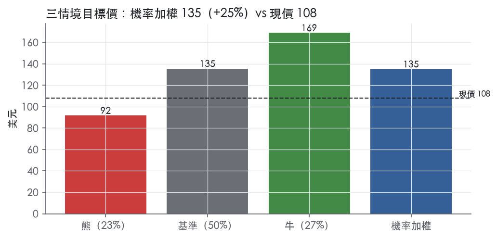
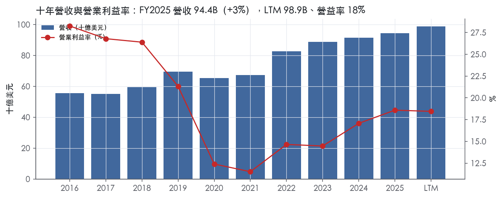
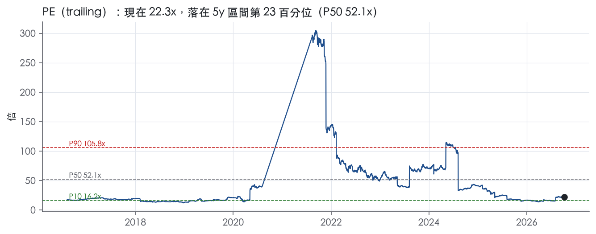
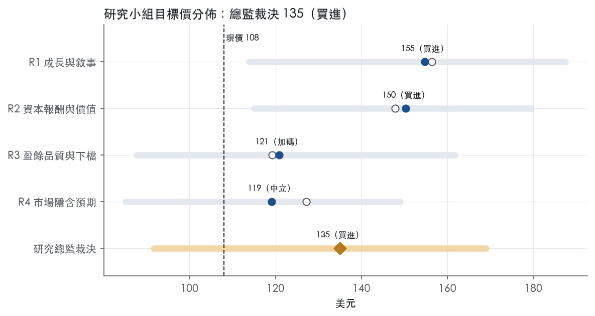
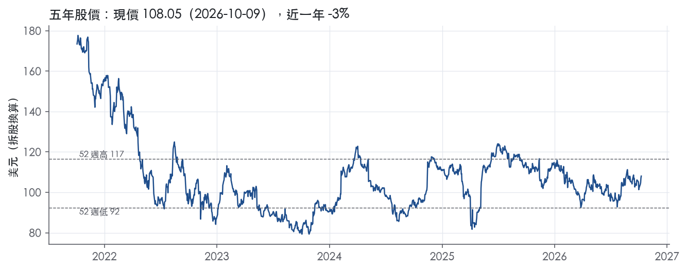

評等總表 › 通訊服務 › DIS
GAAP等價盈餘下市場只付P10，溫和看多｜評等 買進｜目標價 135
| 報告日 | 評等 | 目標價 | 當時股價 | 超額報酬 |
|---|---|---|---|---|
| 2026-10-09 | 買進 | 135 | 108 | +18.3% |
| 評等 | 買進 |
| 12 個月目標價 | 135 美元 |
| 現價 | 108.05 美元（2026-10-09） |
| 預期報酬 | 股價 +25.0%＋股息 1.4%＝總報酬 +26.3%；同業籃門檻 8.0%，超額 +18.3% |
| 估值方法 | P/E 18.0x，套在第 5–8 季的EPS（也就是一年後的未來四季） |
| 三情境 | 熊 92／基準 135／牛 169 |
| 研究流程 | 四位研究員兩輪辯論＋研究總監裁決 |
| 資料來源 | SEC EDGAR XBRL、Tiingo、FRED（全免費） |
GAAP等價盈餘下市場只付P10，溫和看多（研究總監裁決，四位研究員兩輪辯論後）
評等 買進｜12 個月目標價 135 美元（總監三情境機率加權 134 與研究員中位數 136 各半）｜現價 108.05（2026-10-09）
預期報酬：股價 +25.0%＋股息 1.4%＝總報酬 +26.3%。同業籃門檻 8.0%，超額 +18.3%。
估值方法：P/E 18.0x，套在第 5–8 季的EPS（也就是一年後的未來四季）。三情境：熊 92（23%）／基準 135（50%）／牛 169（27%）。
什麼會讓研究總監改變看法：FY2026Q4財報下修FY2027雙位數調整後EPS指引，或FY2027上半年Sports營業利益仍兩位數年減，倍數退回16x轉中性；FY2026 10-K顯示公司層級成本加少數股權使GAAP等價營益率起點低於15%，則下修營益率。
| 過去四季（實際，FY2026Q3） | 未來四季 | 第 5–8 季 | 第 9–12 季 | |
|---|---|---|---|---|
| 營收（B） | 98.9B | 104.3B | 109.5B | 115.0B |
| 營收成長 | 4.6% | 5.5% | 5.0% | 5.0% |
| 營業利益率 | 18.4% | 16.1% | 16.6% | 17.1% |
| EPS（美元） | 4.85 | 6.72 | 7.53 | 8.42 |
| EPS 成長 | -24.1% | 38.6% | 12.1% | 11.9% |
| 每股股息（美元） | — | 0.00 | 0.00 | 0.00 |
| P/E（現價） | 22.3x | 16.1x | 14.4x | 12.8x |
| 股息殖利率（現價） | 1.4% | — | — | — |
過去四季為申報數字；預測為研究總監的假設、程式計算。倍數與殖利率都用現價計算，用來看現價對應各期獲利的高低。
| 情境 | 機率（歷史） | 故事 | 未來四季營收成長 | 第 5–8 季營益率 | 倍數 | 目標價 | 股價漲跌 |
|---|---|---|---|---|---|---|---|
| 熊 | 23%（22%） | 對應主要風險章第1條（Sports版權成本快於收入）加第3條（總經轉弱壓縮樂園、DTC、廣告），固定成本去槓桿使EPS停滯，倍數回P10 | 3.0% | 14.2% | 16.0x | 92 | -15.2% |
| 基準 | 50%（51%） | Experiences與Entertainment撐住、Sports拖累，GAAP等價EPS穩步成長，倍數自P10回補到P10–P25之間 | 5.5% | 16.6% | 18.0x | 135 | 25.4% |
| 牛 | 27%（27%） | Sports止血、串流利潤率加速、FCF支撐9B以上回購，GAAP與調整後差距收斂，倍數升到P25下方 | 6.5% | 17.7% | 20.0x | 169 | 56.4% |
目標價由程式依研究總監的驅動與倍數計算；機率由研究總監給定。括號內是歷史頻率：把這檔股票過去十年 12 個月報酬的波動形狀，置中在基準情境，結果落在各情境附近的比例。

四位研究員用不同方法各自估值，回應研究總監的質疑後交出第二輪，最後由總監逐點裁決。各研究員的主張見第七章，裁決理由見第八章，完整論證見《研究底稿》。
| 立場（一輪→二輪） | 加權目標價（一輪→二輪） | 評等（一輪→二輪） | 第二輪倍數 | 熊～牛目標價 | |
|---|---|---|---|---|---|
| R1 成長與敘事 | 看多→看多 | 156→155 | 買進→買進 | 10.5x | 114～187 |
| R2 資本報酬與價值 | 看多→看多 | 148→150 | 買進→買進 | 10.0x | 115～180 |
| R3 盈餘品質與下檔 | 中性→中性 | 119→121 | 中立→加碼 | 17.0x | 88～162 |
| R4 市場隱含預期 | 看多→看多 | 127→119 | 加碼→中立 | 16.0x | 85～149 |
| 研究總監裁決 | 看多 | 135 | 買進 | 18.0x | 92～169 |
目標價由程式依各自的驅動與倍數計算；評等＝機率加權總報酬 − 同業籃門檻。
Disney 是一家靠近百年IP資產庫撐起的全球多元娛樂集團，收入來源橫跨內容授權、訂閱、廣告與樂園門票四種商業模式。「The Walt Disney Company, together with the subsidiaries through which businesses are conducted (the Company), is a diversified worldwide entertainment company with operations in three segments: Entertainment, Sports and Experiences.」¹公司服務的客戶同時包含付費訂閱的終端消費者、支付授權金的有線／衛星／電信業者（MVPD）、購票進場的樂園遊客，以及買下角色授權的零售與消費品廠商。FY2025 全年營收 94.42B 美元，年增 3.4%，營益率 18.6%，顯示公司已從串流虧損收斂期走向獲利擴張階段。
三大分部中 Entertainment 規模最大、Experiences 利潤率最高、Sports 波動性最大，三者合計構成公司的收入結構骨架。依 FY2026Q3 8-K 揭露，當季 Entertainment 營收 11,345M 美元、Sports 4,500M 美元、Experiences 9,968M 美元，扣除分部間沖銷 565M 美元後總營收為 25,248M 美元²；以此計算 Entertainment 約占總營收 45%、Experiences 約占 39%、Sports 約占 18%。Entertainment 分部涵蓋 Linear Networks（ABC、Disney/FX/National Geographic 頻道）、Direct-to-Consumer（Disney+、Hulu）與 Content Sales/Licensing（院線、TV/VOD、家庭娛樂、舞台劇、音樂）三條產品線¹。Sports 分部以 ESPN 為核心，「The Sports segment generally encompasses the Company's sports-focused global television and DTC video streaming content production and distribution activities.」¹ESPN 持有 NFL、NBA、MLB、NHL、大學美式足球等版權組合，並在 2025 年 8 月推出 ESPN Select 與 ESPN Unlimited 兩個 DTC 方案¹。Experiences 分部下轄 Parks & Experiences（Walt Disney World、Disneyland、國際樂園、Disney Cruise Line、Disney Vacation Club）與 Consumer Products（授權、零售）兩大業務¹。FY2026Q3 Experiences 營業利益年增 20%，其中約四個百分點來自一次性關稅退款²；Entertainment 分部營業利益年增 64%，從 1,022M 美元升至 1,680M 美元²；Sports 分部營業利益則年減 17%，從 1,037M 美元降至 858M 美元²。三個分部的利潤率走勢分化，反映 Entertainment 串流轉盈、Experiences 持續擴張、Sports 進入版權成本上升週期。
Disney 的收入來源一半靠美國本土消費、一半靠全球平台與海外樂園，通路涵蓋線性電視、DTC 串流、戲院、零售與主題樂園五種介面。截至 2025 年 9 月 27 日，Disney+ 付費訂閱數約 132M（內部管理報告估計），Hulu 付費訂閱數約 64M¹。國際 Linear Networks 在約 30 種語言、170 個國家/地區營運約 180 個一般娛樂與家庭頻道，一般娛樂頻道獨立訂閱數約 145M、家庭頻道約 130M¹。ESPN 國際版圖涵蓋約 110 個國家/地區、4 種語言、約 45 個頻道¹。樂園方面，美國本土的 Walt Disney World 與 Disneyland Resort 為主力現金流來源，國際上則透過合資或授權模式經營 Disneyland Paris、Hong Kong Disneyland（持股 48%）、Shanghai Disney Resort（持股 43%）及授權 Oriental Land 經營的東京迪士尼樂園¹。零售通路上，公司在日本約經營 40 家 Disney Store、北美約 20 家、歐洲 2 家、中國 1 家¹。FY2026Q3 國際 Asia 樂園出現疲軟，公司並預期這一疲軟態勢將延續到 Q4，但美國本土樂園、Disney Cruise Line、消費品與 Disneyland Paris 的強勁表現足以抵銷²。整體看，北美市場貢獻多數獲利彈性，亞洲市場則是近期的拖累變數，公司增長布局明顯往串流國際化與本土樂園擴容兩端傾斜。
過去四季營收持續年增、但 GAAP EPS 因一次性項目劇烈波動，公司靠非 GAAP 調整後 EPS 與分部營業利益兩項指標溝通真實經營趨勢。FY2025Q4（期末 2025-09-27）營收 22.46B 美元，年減 0.5%，營益率 15.5%，淨利 1.31B 美元（bs/ 相關欄位，見資料包最近八季表）。FY2026Q1（期末 2025-12-27）營收回升至 25.98B 美元，年增 5.2%，營益率 17.7%，淨利 2.40B 美元（資料包最近八季表，FY2026Q1 欄）。FY2026Q2，「Revenues increased 7% for the second quarter to $25.2 billion from $23.6 billion in Q2 fiscal 2025. ... Total segment operating income (1) increased 4% to $4.6 billion from $4.4 billion in Q2 fiscal 2025. Diluted earnings per share (EPS) decreased to $1.27 from $1.81 in Q2 fiscal 2025. Adjusted EPS increased to $1.57 from $1.45 in Q2 fiscal 2025.」³公司當時給出「We expect Q3 total segment operating income of approximately $5.3 billion.」的次季指引³。FY2026Q3，「Revenues increased 7% for the third quarter to $25.2 billion from $23.7 billion in Q3 fiscal 2025. ... Total segment operating income increased 21% to $5.6 billion from $4.6 billion in Q3 fiscal 2025. Diluted earnings per share (EPS) decreased to $1.51 from $2.92 in Q3 fiscal 2025. Adjusted EPS (1) increased to $2.06 from $1.61 in Q3 fiscal 2025.」²公司同時將全年股票回購目標由「at least $8 billion」上修為「at least $9 billion」，並給出「We expect Q4 total segment operating income of approximately $4.9 billion, including the impact of the 53rd week.」的指引²。四季合計，公司營收與調整後 EPS 穩定成長，但 Sports 分部的營業利益連續承壓，反映版權成本上升速度快於訂閱與廣告收入成長。
公司自己定義的三大戰略支柱貫穿近兩季法說信，核心是用 IP、技術與全球觸達三條線撬動營收與利潤成長。FY2026Q3 法說信寫明：「1. Investing in IP and creativity that breaks through, builds connections, and endures 2. Using advanced technologies to power our storytelling and increase monetization and returns 3. Reaching more consumers in more seamless, engaging ways around the world with a One Disney operating model」²。在 IP 投資上，公司強調《Toy Story 5》「has already surpassed $1 billion in global box office, bringing the franchise's lifetime global box office to more than $4 billion」，且該片「further lifted the franchise on Disney+, which has over two billion hours streamed」，並帶動消費品業務「our strongest quarter of year-over-year growth in Consumer Products revenue in 20 quarters」²。在串流國際化上，公司表示「Across the next three years we plan to roughly triple the number of local original series on Disney+ to drive new international users to the platform and reduce churn.」²。在 ESPN 的「marketplace of sports」策略上，公司提到已與 NFL、MLB、FOX One 及新加入的 CW Network 建立合作，「more than 800 annual hours of CW Sports will stream live on the ESPN app」²。上一季法說信則強調樂園端的 IP 轉化效率，例如「The World of Frozen is our most recent example of taking franchise IP and translating it into immersive physical experiences that deepen fan affinity and drive attractive economic returns.」³。整體看，公司的成長引擎敘事高度一致：用院線與旗艦 IP 做流量入口，再把流量導向串流訂閱、樂園消費與授權商品三個變現出口。這套「一次創作、多次貨幣化」的模式降低了單一業務線的波動風險，但也意味著任何一部重磅續集票房不如預期（如本季《The Mandalorian and Grogu》與《Moana》真人版票房不如預期），都會同時拖累多條收入線。從近兩季的分部表現看，Experiences 的營業槳桿效率最穩定，Sports 的版權成本周期是未來毛利率波動的主要變數。

Disney 的護城河評為「窄」，趨勢「穩定」：IP 庫與目的地型樂園構成真實且難以複製的優勢，但過去九年 ROIC 只有四年高於資本成本，數字撐不起「寬」。我們有把握 Experiences 與 IP 授權在未來 5 年以上賺到高於資本成本的報酬。線性電視與體育版權這兩塊業務的報酬持續被侵蝕，因此無法對 10 年做出同等把握。
優勢來源有兩類：主要是無形資產（IP 庫與品牌），其次是效率規模（目的地型樂園）。轉換成本與網路效應都找不到證據，所以不列。
無形資產。 這是 Disney 最核心、也最不可複製的資產。「The Company has a significant library of content spanning approximately 100 years of production history as well as acquired libraries.」¹片庫包含約 5,300 部真人電影與 460 部動畫電影¹。「Generally, the Company has full production and distribution rights to its IP.」¹授權收入的條件也反映 IP 的議價力：權利金「are usually based on a fixed percentage of the wholesale or retail selling price of the products and often include minimum guarantee payments from the licensees.」¹最直接的證據是 IP 不必投入資本也能收費：Abu Dhabi 樂園由 Miral 興建營運，「The Company will not provide capital for the development and operation of the resort.」¹東京迪士尼採同一模式，公司「earns royalties on revenues generated by the Tokyo Disney Resort」¹。單靠品牌就能向第三方收取營收分成，是無形資產護城河的典型樣貌。
效率規模。 目的地型樂園需要大量土地與長期資本，一個市場容得下的玩家很少，後進者很難賺到合理報酬。Walt Disney World 座落在約 25,000 英畝土地上，公司在園區內自有自營 18 座度假飯店與分時度假物業，約有 23,000 間客房¹。Disney Cruise Line 在 FY2026 新增兩艘船，另有四艘預計在 2027 至 2031 年間下水，且都已簽約建造¹。
為什麼不列轉換成本。 串流訂閱的流失率被公司自己列為風險因子：「consumer preferences and acceptance of our content, offerings, pricing model and price increases, and corresponding subscriber additions and churn」¹。公司計畫增加在地原創內容，目的之一就是「reduce churn」²。這表示用戶要離開並不難。
數字支持「窄」，但否定「寬」。ROIC 十年平均 10.8%，只比資本成本代理值 10.2% 高出 0.5%，有資料的 9 年中只有 4 年高於資本成本。ROIC 標準差 5.1%、營業利益率標準差 5.9%，兩者都不算穩定。FY2020 至 FY2023 的 ROIC 分別為 6.4%、6.1%、6.3%、6.9%，連續四年低於資本成本（–FY2023）。這和寬護城河「長期高於資本成本、利潤率穩定」的樣貌明確衝突。
我們仍然維持「窄」而不下修為「無」，理由有三：
最大的侵蝕來源是線性電視的通路議價力流失。公司自己承認：「Consolidation and other market conditions in the cable, satellite and telecommunication distribution industry, including changes in subscriber levels, the prevalence of streaming services and other factors may adversely affect the Company's ability to obtain and maintain contractual terms for the distribution of its various programming services that are as favorable as those currently in place.」¹
其次是體育版權成本。公司「compete with other media and entertainment companies and video-on-demand services for sports rights」¹。Sports 分部營業利益已從 1,037M 美元降至 858M 美元²。另外，NFL Transaction 將以 ESPN 的 10% 非控制權益作為對價¹。
第三是資本密集度上升。資本支出占營收比由 FY2024 的 5.9% 升至 FY2025 的 8.5%（FY2025）。新郵輪與樂園擴建若沒有達到預期回報，會直接稀釋 ROIC。
最後是樂園的景氣循環與 IP 授權上的限制。樂園獲利受到「economic conditions including business cycle and exchange rate fluctuations」等不可控因素影響¹。IP 權利也不完整：「Sony Pictures Entertainment has the rights to produce and distribute Spider-Man films」¹。
目標倍數相對同業應該持平，不給溢價。理由是 ROIC 平均只比資本成本高出 0.5%，IP 的優勢還沒有轉化成可持續的超額報酬；而且 Sports 與線性網路的侵蝕會抵銷 Experiences 的擴張，超額報酬期以 5 年左右估算較為穩妥。目前 EV/EBITDA 為 9.6x，已低於 5 年 P10 的 9.8x；但窄護城河不足以支撐把倍數拉回 10 年 P50 的 11.9x，重估前應先看到 ROIC 連續數年站穩資本成本之上。
| 指標 | 最新 | 十年平均 | 標準差 | 最低 | 最高 |
|---|---|---|---|---|---|
| ROIC | 12.2% | 10.8% | 5.1% | 6.1% | 21.7% |
| 營業利益率 | 18.6% | 19.1% | 5.9% | 11.5% | 28.3% |
| FCF 利潤率 | 10.7% | 8.4% | 5.6% | 1.3% | 16.5% |
| ROE | 11.8% | 9.7% | 9.7% | -3.3% | 28.0% |
程式計算。資本成本代理值（10 年債＋5%）：10.2%；ROIC 平均減資本成本：0.5%；ROIC 有資料的 9 年中，高於資本成本 4 年。
LTM 營業現金流／淨利 1.98x、近三年平均 2.82x、十年平均 1.49x，三個期間都在綠燈區且呈上升趨勢，代表淨利有現金支撐。FCF／淨利 LTM 為 0.96x，優於十年平均 0.74x，資本支出增加後盈餘仍有近乎等量的自由現金流對應。應計比率 LTM 為 -4.1%、近三年 -3.7%、十年平均 -2.4%，全部為負值，表示淨利持續低於應計推估、盈餘不是靠應計項目堆出來的。不過單季數字有明顯季節性：FY2026Q1 營業現金流僅 0.73B、FCF 為 -2.28B（資料包季表），同一季總債務也從 FY2025Q4 的 42.03B 跳到 46.64B（資料包季表），顯示公司在內容/樂園資本支出與併購相關現金流出集中的季度靠舉債過渡，而非盈餘品質惡化。存貨成長與營收成長的差距在 FY2025 僅 +2.2pp，營運資金沒有在吃掉盈餘。整體看，現金轉換是這份報告裡最乾淨的一塊。
公司 Q3 FY2026 GAAP 稀釋 EPS 為 1.51 美元，較去年同期 2.92 美元下滑 48%，但「排除特定項目」後的調整 EPS 反而從 1.61 美元成長到 2.06 美元²。九個月累計 GAAP 稀釋 EPS 4.12 美元 對比調整後 EPS 5.25 美元，缺口達 1.13 美元／股²。新聞稿明確定義「Total segment operating income」「Diluted EPS excluding certain items」與「Free cash flow」皆為非GAAP指標，最可比的GAAP數字分別是稅前所得、稀釋EPS與營業現金流，並說明詳細調節表在原文第23–27頁²，但本次拿到的節錄未附上該調節表，因此無法逐項列出 SBC、攤銷、重組等金額的具體拆分。可以確認的落差之一是：Q3 稅前所得僅 3.645B，而「Total segment operating income」高達 5.555B²，兩者差距主要來自公司層級成本、權益法損益與利息費用等未分攤到分部的項目，這些是真實存在的成本，不應被模型完全忽略。在缺乏逐項調節表的情況下，我把 GAAP 與非GAAP 之間 1.13 美元／股（九個月）的落差視為「尚待驗證」的調整，而非可直接採信的一次性項目。
淨負債／EBITDA 的 LTM 為 1.72x，高於十年平均 1.86x 略低但高於近三年平均 1.76x，整體落在黃燈區。利息保障倍數 LTM 為 9.97x，遠高於紅線 3.00x，付息能力沒有壓力。股東回饋強度（股利＋回購）／淨利 LTM 高達 95.9%，遠高於十年平均 55.1%，公司在用接近全部淨利做回購與配息。稀釋股數年變動 LTM 為 -1.6%，確認回購確實有在淨減少股數而非只是對沖SBC稀釋。公司在最新財報中將 FY2026 回購目標上調至「at least $9 billion」²，而同期總債務從 FY2025Q4 的 42.03B 升至 FY2026Q1 的 46.64B、FY2026Q3 進一步到 46.04B（資料包季表），顯示部分資本支出與高額回購是靠增加槓桿完成，這是槓桿轉黃的直接原因。
淨負債／EBITDA 黃燈：LTM 1.72x 高於綠燈門檻 1.50x，但遠低於紅線 3.00x，且利息保障倍數 9.97x 仍非常健康，我認為這是為支應 $9B 回購目標與樂園／郵輪資本支出而主動加的槓桿，不是償債能力惡化的訊號，可解釋、非紅旗。程式標出的紅旗「淨利率 FY2019→FY2020 跳動 -20個百分點」：FY2019 淨利 11.05B（EPS 6.64）、FY2020 淨利轉為 -2.86B（EPS -1.58）（資料包年表），這對應樂園與電影院因疫情關閉、串流投資大幅增加的時期，是六年前的一次性宏觀衝擊，與當前盈餘品質無關，應視為假警報。非GAAP調整幅度大但無逐項揭露：Q3 GAAP 與調整EPS差距達 0.55 美元、九個月差距 1.13 美元²，計分表本身沒有把這個落差標記為紅旗，但我主動列為需要留意的項目，因為調節表內容在本次節錄中缺失，無法驗證其中多少是SBC／攤銷這類會重複出現的成本。季度現金流轉負（FY2026Q1 FCF -2.28B）：計分表用的是LTM與年度數字沒有單獨標紅，但屬於真實的季節性現金流出，資本支出集中在郵輪新船（Disney Destiny／Disney Adventure）等項目導致（資料包季表、10-K Item 1 郵輪擴張敘述）。
估值應以 GAAP 稀釋 EPS 為主要基準，對非GAAP調整EPS打折，因為本次缺乏完整調節表、九個月落差達 1.13 美元／股，無法確認其中有多少是真實的現金成本。槓桿目前落在黃燈但未到限制倍數的程度，EV/EBITDA 可以維持在接近近五年中位數附近，不需要額外壓縮倍數，但若 FY2026 的 $9B 回購持續靠加債完成，下一輪財報要重新檢查淨負債／EBITDA 是否逼近 2.0x 以上。整體盈餘品質中等偏上，現金轉換沒問題，主要的不確定性來自非GAAP調整的透明度而非現金本身，建議對盈餘做 5–10% 的保守折價反映這個資訊缺口。
| 項目 | LTM | 近三年 | 十年 | 燈號 | 規則 |
|---|---|---|---|---|---|
| 營業現金流／淨利 | 1.98x | 2.82x | 1.49x | 綠 | ≥1.00x 綠、<0.80x 紅 |
| 自由現金流／淨利 | 0.96x | 1.54x | 0.74x | 綠 | ≥0.90x 綠、<0.60x 紅 |
| 應計比率（(淨利−CFO)／平均總資產） | -4.1% | -3.7% | -2.4% | 綠 | ≤0.0% 綠、>5.0% 紅 |
| SBC／營收 | 1.5% | 1.4% | 1.0% | 綠 | ≤3.0% 綠、>8.0% 紅 |
| 淨負債／EBITDA | 1.72x | 1.76x | 1.86x | 黃 | ≤1.50x 綠、>3.00x 紅 |
| 利息保障倍數（營業利益／利息） | 9.97x | 7.91x | 15.0x | 綠 | ≥8.00x 綠、<3.00x 紅 |
| 稀釋股數年變動 | -1.6% | -0.3% | 1.2% | 綠 | ≤0.0% 綠、>3.0% 紅 |
| （股利＋回購）／淨利 | 95.9% | 65.2% | 55.1% | 綠 | ≥50.0% 綠、<0.0% 紅 |
| 存貨成長 − 營收成長（FY2025） | +2.2pp | — | — | 綠 | ≤5pp 綠、>15pp 紅 |
程式計算；燈號以 LTM（無則近三年平均）判定。
| 風險 | 觸發指標（看什麼數字、在哪裡看） | 對 EPS 的影響方向與粗略幅度 | 未來 12 個月發生機率（高／中／低） | 出處 |
|---|---|---|---|---|
| Sports 分部版權成本上升快於收入，營業利益連續下滑 | 每季 8-K「Segment operating income - Sports」年增率；ESPN DTC 訂閱數揭露 | 負向／中：FY2026Q3 Sports 營業利益年減 17%（858M vs 1,037M 美元） | 高 | 8-K 財報新聞稿（2026-08-05） |
| 院線大片票房不如預期，連動串流、樂園、消費品三條收入線 | 每部重磅續集上映首週票房公告；Disney+ 串流時數揭露 | 負向／中：《The Mandalorian and Grogu》與《Moana》真人版「underperformed our box office expectations」² | 中 | 8-K 財報新聞稿（2026-08-05） |
| 宏觀經濟轉弱壓縮樂園門票、DTC 訂閱與廣告需求同時下滑 | 樂園每季遊客數與單房收入（Experiences 營收年增率）；DTC 訂閱淨增數 | 負向／大：公司自述「lower attendance and spending at our parks and experiences businesses, fees received for our cable programming and DTC services」⁴ | 中 | 10-K 年報 FY2025 Item 1A（風險因素） |
| 技術變遷（AI、串流取代線性）侵蝕線性網路資產價值，可能觸發減損 | Linear Networks 訂閱數（如 Disney Channel 61M、Freeform 51M 等）年度揭露；資產減損公告 | 負向／中：公司自述「may lead...to the impairment of the value of certain of our assets」⁴ | 中 | 10-K 年報 FY2025 Item 1A（風險因素） |
| 不可控事件（天災、疫情式停業、網路攻擊）直接衝擊樂園與製作營運 | 單一事件造成的樂園臨時關閉公告；8-K 揭露的營運中斷事項 | 負向／大但低頻：公司列舉颶風曾「caused park closures and other impacts to the operations of Walt Disney World Resort」⁴ | 低 | 10-K 年報 FY2025 Item 1A（風險因素） |
風險一：Sports 分部利潤率惡化是目前最明確、最可監測的壓力源。 FY2026Q3 Sports 營收年增 4%，但營業利益反而年減 17%，從 1,037M 美元降至 858M 美元²；累計九個月營業利益年減 14%（1,701M vs 1,971M 美元）²。公司正同時擴張版權組合（NFL Network 收購案、WWE PLE 獨家轉播、CW Network 合作）並推出 ESPN Select／Unlimited 兩個 DTC 方案¹，若訂閱轉換速度跟不上版權攤銷成本，這條利潤率下滑的趨勢會持續拖累集團 EPS。這條風險的好處是「容易盯」：每季 8-K 都會單獨揭露 Sports 分部營業利益，不需要等年報。
風險二：內容投資的「一次創作、多次貨幣化」模式放大了單片失敗的衝擊半徑。 業務概況章已指出，公司把院線票房當成串流、樂園、消費品三條收入線的流量入口。本季財報信直接承認《Star Wars: The Mandalorian and Grogu》與暑假檔《Moana》真人版「both films underperformed our box office expectations」²，儘管公司強調這些投資仍透過樂園設施更新（Smuggler's Run）與零售帶來價值外溢²，但若未來一年的旗艦續集（如已上映且表現強勁的《Toy Story 5》之外的片單）接連不如預期，消費品與樂園的「強勁對沖」敘事會站不住腳。
風險三：宏觀經濟轉弱是公司 10-K 寫在第一條的風險，且影響面最廣、但也最難精準預測時點。 原文明確指出經濟轉弱會同時壓低樂園出席與消費、有線節目與 DTC 服務的訂閱費、廣告購買量與授權金，且通膨環境還會提高勞動力與借貸成本⁴。目前總經背景下美債 10 年殖利率達 5.22%、Fed Funds 3.75%，借貸成本偏高的環境與 10-K 所述的風險情境吻合。這條風險可觀測性較弱，只能用 Experiences 分部每季營收年增率與樂園單房收入作為先行指標。
風險四：技術與消費習慣變遷持續侵蝕線性電視資產，減損風險尚未完全反映在財報上。 10-K 原文直言「the industry-wide decline in ratings for broadcast and cable television...have led, and may lead in the future, to the impairment of the value of certain of our assets」⁴。業務概況章列出的線性頻道訂閱數（Disney Channel 61M、FX 62M、National Geographic 61M 等）¹是這條風險的監測基準，若未來年報揭露這些數字顯著下滑，資產減損的機率上升。公司也點名生成式 AI 對 IP 授權模式的法規不確定性仍「remain unsettled」⁴，屬於長期尾部風險，不易用單一數字監測。
風險五：不可控事件（天災、疫情式停業、資安事故）屬於低頻但高衝擊的尾部風險。 10-K 列舉颶風、地震、COVID-19 式全面停業、付款處理中斷與網路攻擊，並明確提到颶風「caused park closures and other impacts to the operations of Walt Disney World Resort」⁴。這類事件發生機率低，但一旦發生會直接衝擊 Experiences 分部現金流，且公司自承「our ability to mitigate these impacts on our businesses is limited」⁴。
一、GAAP EPS 與 Adjusted EPS 的落差正在擴大，稀釋真實盈餘品質的訊號。 FY2026Q3 GAAP 稀釋 EPS 年減 48%（1.51 vs 2.92 美元），但 Adjusted EPS 反而年增 28%（2.06 vs 1.61 美元）²；九個月累計同樣是 GAAP EPS 年減 33%、Adjusted EPS 年增 9%²。這個落差主要來自分部重組（Fubo／NFL 交易產生的一次性項目）而非營運現金流惡化，但若這類「排除項目」常態化，投資人需要更仔細盯 CFO 與 FCF 的現金品質，而非只看 Adjusted EPS 的頭條數字。
二、股票回購節奏與 FCF 波動脫鉤，可能壓縮未來資本配置彈性。 公司將全年回購目標上修至「at least $9 billion」²，但九個月累計自由現金流年減 24%（5,735M vs 7,519M 美元）²，且 FY2026Q1 單季 FCF 為負 2.28B 美元。若未來幾季 FCF 持續弱於回購目標所需的現金水位，公司可能需要動用負債（淨負債已達 40.86B 美元）來維持回購節奏，這會在熊市情境下放大財務槓桿風險。
現價 108.05 對應 trailing（過去四季）P/E 22.3x、EV/EBITDA 9.6x、EV/EBITA 11.8x、EV/Sales 2.3x、FCF 殖利率 4.4%。主要估值倍數 P/E 現在 22.3x，落在5 年區間第 23 百分位（P10／P50／P90 = 16.2x／52.1x／105.8x）。

把程式的機械基準預測放到現價下，市場付的前瞻倍數是：P/E（未來四季） 13.8x、P/E（第 5–8 季） 12.5x。反推 DCF 顯示市價隱含未來五年營收年成長 6.8%（WACC 9.0%、終值成長 3.0%、FCF 利潤率 10.9%，SBC 不加回）。
| 倍數 | 現在 | 5 年 P10 | 5 年 P50 | 5 年 P90 | 現在分位 | 全期 P50 |
|---|---|---|---|---|---|---|
| P/E | 22.3x | 16.2x | 52.1x | 105.8x | 23.4% | 20.9x |
| EV/EBITDA | 9.6x | 9.8x | 11.5x | 19.0x | 8.6% | 11.9x |
| EV/EBITA | 11.8x | 11.9x | 14.2x | 24.0x | 9.0% | 15.3x |
| EV/EBIT | 12.6x | 12.8x | 16.0x | 28.9x | 8.0% | 15.7x |
| EV/Sales | 2.3x | 2.2x | 2.5x | 3.8x | 25.1% | 3.1x |
| P/S | 1.9x | 1.8x | 2.1x | 3.3x | 26.6% | 2.7x |
| P/FCF | 22.7x | 19.4x | 26.5x | 180.8x | 30.8% | 27.2x |
trailing 倍數（股價 ÷ 過去四季）；分位以每個交易日計算。
同業籃：DKNG, BRSL, GENI, GDHG, FBYD, FCHL（SIC 7990 同業 13 家中，CY2025 營收最接近的 6 家）。評等門檻 —：同業「倍數不變下持有一年」的隱含報酬中位數（＝ FCF 殖利率 ×(1＋g)＋g，g 為 5 年營收年複合成長並夾在 −2%～8%），每家夾在 0～15%、P/E 低於 5 倍視為資料可疑而排除，中位數再限制在 10 年債到 10 年債＋5% 之間；排除：BRSL（隱含報酬算不出來）、GENI（隱含報酬算不出來）、GDHG（隱含報酬算不出來）、FBYD（隱含報酬算不出來）、FCHL（隱含報酬算不出來）。
| 代號 | 市值 | 5 年營收 CAGR | 營益率 | ROIC | P/E | 5 年 P/E 中位數 | EV/EBITDA | P/FCF | 隱含報酬 |
|---|---|---|---|---|---|---|---|---|---|
| DIS | 188.3B | 7.6% | 18.4% | 12.2% | 22.3x | 52.1x | 9.6x | 22.7x | 12.4% |
| DKNG | 9.7B | 58.0% | -2.9% | — | — | — | — | 14.9x | 15.2% |
| BRSL | 1.8B | -4.2% | — | 6.1% | — | — | — | — | — |
| GENI | — | 34.9% | — | — | — | — | — | — | — |
| GDHG | — | -20.6% | — | — | — | — | — | — | — |
| FBYD | 0.4B | -2.3% | 2.3% | -47.0% | — | — | 420.9x | — | — |
| FCHL | — | 5.4% | — | 579.3% | — | — | — | — | — |
| 同業中位數 | 1.5% | -0.3% | 6.1% | — | — | 420.9x | 14.9x | — |
全部 trailing，程式以各公司 SEC XBRL 與 Tiingo 行情計算；第一列為本檔。
事後實現前瞻倍數帶（P/E，2018-08-17..2025-08-15）：P10／P50／P90 = 15.9x／47.3x／120.2x。它是每個交易日的股價除以之後四季實際實現的指標；一年後，今天的第 5–8 季正是那時的未來四季，所以這條帶是 12 個月目標價的同口徑倍數。因為用的是事後實際而非當時預期，過去成長超乎預期的公司這條帶會偏低。
程式的機械基準（成長率從過去四季年增率三年收斂到 6%、利潤率持平）用 事後實現前瞻 P/E P50 估值得到 408（277.5%），市場現行前瞻倍數（現價 ÷ 基準 未來四季指標）一年後持平，套在基準 第 5–8 季指標得到 119。這兩個數字只是參考點，不是本報告的目標價；研究員對這個定價的回應在第七章。
下表是每位研究員第一輪（各自獨立）與第二輪（回應研究總監的質疑後）的結果。目標價全由程式依各自的假設計算。
| 立場（一輪→二輪） | 加權目標價（一輪→二輪） | 評等（一輪→二輪） | 第二輪倍數 | 熊～牛目標價 | |
|---|---|---|---|---|---|
| R1 成長與敘事 | 看多→看多 | 156→155 | 買進→買進 | 10.5x | 114～187 |
| R2 資本報酬與價值 | 看多→看多 | 148→150 | 買進→買進 | 10.0x | 115～180 |
| R3 盈餘品質與下檔 | 中性→中性 | 119→121 | 中立→加碼 | 17.0x | 88～162 |
| R4 市場隱含預期 | 看多→看多 | 127→119 | 加碼→中立 | 16.0x | 85～149 |
| 研究總監裁決 | 看多 | 135 | 買進 | 18.0x | 92～169 |
目標價由程式依各自的驅動與倍數計算；評等＝機率加權總報酬 − 同業籃門檻。
分歧度：第一輪 加權目標價 119～156（區間＝現價的 34%）· 倍數 10～17x · 立場 看多×3、中性×1；第二輪 加權目標價 119～155（區間＝現價的 33%）· 倍數 10～17x · 立場 看多×3、中性×1。

| 研究員 | 第二輪主張 | 堅持的理由 |
|---|---|---|
| R1 成長與敘事 | 看多。企業價值倍數 10.5 倍，高於五年低檔，低於十年中位數。 | 分部口徑盈餘與會計盈餘脫節，所以主尺用企業價值倍數，不回到 P/E。 |
| R2 資本報酬與價值 | 溫和看多。企業價值倍數 10.0 倍，現價已跌破自家五年低檔。 | 口徑偏誤已在營益率修正，倍數再下砍就是重複扣分。 |
| R3 盈餘品質與下檔 | 中性。會計口徑 P/E 17 倍，在前瞻倍數區間下緣之上偏低處。 | 不採用調整後 EPS，因為併購攤銷與重組會持續發生，不能加回。 |
| R4 市場隱含預期 | 小幅看多。會計口徑 P/E 16 倍，等於市場持平的倍數。 | 市場錯在營益率方向。營益率會上升，報酬全部來自 EPS 上修。 |
每位研究員的逐條回應與完整論證見《研究底稿》（DIS_研究底稿_2026-10-12.docx）。
| 分歧點 | R1 | R2 | R3 | R4 | 什麼資料會分出勝負 |
|---|---|---|---|---|---|
| ① 營益率口徑（op_margin_y2） | 分部口徑 19.0%，改用 EV/EBITDA 避開落差 | 分部口徑 18.4%，同用 EV/EBITDA | GAAP 等價（利息前）16.5%，少數股權改由稅率承載 | GAAP 等價 16.6%，含少數股權預留，稅率沿用基準 | FY2026 10-K（2026-11 下旬）的公司層級成本、TFCF 攤銷、非控制權益金額；8-K 第 23–27 頁調節表 |
| ② 主尺與目標倍數（multiple） | 10.5x EV/EBITDA@ntm，5y P10 與 10y P50 之間 | 10.0x EV/EBITDA@ntm | 17x P/E@q5_q8，前瞻帶 P10 之上偏下 | 16x P/E@q5_q8，貼前瞻帶 P10＝市場持平 | 程式確認 EV 倍數換算是否扣淨負債；FY2026Q4 財報（2026-11）是否重申 FY2027 指引 |
| ③ 中期營收（rev_growth_y2） | 4.5% | 4.5% | 4.5%，53 週高基期 | 4.3%，53 週加亞洲樂園 | FY2027Q1 分部營收年增（2027-02）；53 週只影響 FY2027Q4 單季比較 |
| ④ 少數股權承載欄位（tax_rate） | 沿用 23.7% | 沿用 23.7% | 27%（稅加少數股權外流） | 23.7%，少數股權放營益率 | 10-K 損益表歸屬非控制權益淨利金額 |
| ⑤ 股數年變動（share_change_pct） | −2.0% | −2.5% | −2.5% | −2.5%，NTM 反映 9B 回購落後效果 | FY2026Q4 財報的 FY2027 回購指引（2026-11）；FY2027Q1 稀釋股數 |
① 營益率口徑：選 R4。 這是決定主尺的分歧。資料包 FY2026Q3 營益率 22.0%與 8-K 的分部營業利益 5,555M 同量級，同季稅前所得只有 3,645M，九個月是 14,758M 對 10,705M²。基準模型在分部利益之後只扣利息與稅，所以 NTM EPS 7.85對 LTM GAAP EPS 4.85脫節。R1、R2 的解法是改用 EV/EBITDA，主張「自家帶與指標同口徑」——這句話沒錯，但只保證倍數比較一致，沒有回答權益價值要扣多少分部線以下成本。而且 R1 在 G1 延伸自己提出：程式換算 EV 倍數為每股價格時可能沒扣淨負債 40.86B。這個疑問尚未經程式確認，確認前 EV 主尺的三位數目標價不能作裁決依據；請程式回覆。R3 與 R4 的 GAAP 等價營益率只差 0.1pp，我選 R4 的 16.1／16.6／17.1%：R4 把少數股權預留放在營益率內、稅率沿用基準，口徑完整；R3 用稅率承載少數股權是借欄位，兩者不能同時採用。R4 的 15.5% 持平起點是假設，決勝資料是 FY2026 10-K。
② 主尺與目標倍數：own，18x eps @ q5_q8。 回到劇本主尺有兩個理由：口徑問題應在盈餘端修正（R3、R4 第二輪都已做到），以及 EV 換算疑問未解。R3（17x）與 R4（16x）都錨在事後實現前瞻帶 P10 15.9x 附近，R4 明確說這就是市場持平。我付 18x、高於持平，理由全是個股因素：（a）trailing P/E 1y P50 16.2x（估值劇本錨帶）是打在 FY2025 EPS 6.85上，而 R3 指出那個數字被稅務項目墊高——FY2025Q3 淨利 5.26B高於同季稅前所得 3,211M²——分母正常化後，市場過去一年的典型倍數高於 16x；（b）FY2027 要 lap 的是 Fubo／NFL 交易一次性項目（假設），GAAP 與調整後 EPS 差距收窄時，市場對更乾淨的盈餘付的倍數會回升；（c）18x 仍低於前瞻帶 P25 22.6x 與 10 年 trailing P50 21.2x，經濟護城河章「窄、不給溢價」與 NFL 交易讓出 ESPN 10% 權益¹是不到 P25 的理由。R3 第二輪仍把「帶子期間利率低於現在 10 年債 5.22%」列為不取更高分位的輔助理由，這條不能用：現價已反映利率，R4 已依 E5 刪除；R3 的 17x 我只接受它的個股理由。R1、R2 的倍數論證（5y P10 9.8x 之上、10y P50 11.9x 之下）本身不受換算疑問影響，仍作交叉驗證。
③ 中期營收：own，5.0%。 四位一致把 y2 壓到 4.3–4.5%，主要理由是第 53 週高基期。這個理由錯位：53 週落在 FY2026Q4，影響的是 FY2027Q4 對 FY2026Q4 的單季比較；NTM（FY2027）對 LTM@FY2026Q3、Q5–Q8（FY2028）對 NTM 都是 52 週對 52 週，成長率不受影響。扣掉這條，剩下的拖累是亞洲樂園疲軟延續到 Q4²與線性電視衰退，真實但只值從基準 5.5% 下修到 5.0%。我也不接受基準向 6.0% 收斂：含疫情復甦的 5 年 CAGR 7.6%（同業表）與含 TFCF 併購的十年成長都不是無併購常態，y3 同為 5.0%。y1 取 R3 的 5.5%：近三季年增 5.2／6.5／6.8%（最近八季表）、新郵輪全年貢獻，扣亞洲樂園。
④ 少數股權承載：選 R4。 R3 把 tax_rate 調到 27%，但自承純稅率看法仍是基準 23.7%；R4 把預留放進營益率、稅率不動。效果相近時我選不扭曲欄位定義的做法，且與①同口徑才不會重複扣。10-K 的非控制權益金額可以推翻這點。
⑤ 股數年變動：選 R4，−2.5%。 基準 −3.4% 沒有來源：LTM 實際 −1.6%、股東回饋／淨利 95.9%（盈餘品質章）、九個月 FCF 5,735M 對 7,519M²。R1 的 −2.0% 更保守，但回購目標上修到至少 9B²對 NTM 稀釋股數的落後效果是真實的，R4 說明最清楚。
漂移：無退回。 四位第二輪變動都附證據；R2、R4 是遠離其他人中位數（靠攏比例 −12%、−39%）。R3 熊機率 21%→25% 是熊倍數上調、距離縮短後重查歷史表（程式對照 26%）；R1 牛 27%→32% 是向歷史靠（對照 32%）。都不是無證據靠攏。
與機械基準不同的驅動：
目標倍數 18x，metric eps，horizon q5_q8，可直接與事後實現前瞻帶比較。錨：前瞻帶 P10 15.9x 與 P25 22.6x 之間偏下（／P25），低於 10 年 trailing P50 21.2x；高於 R4 估計的市場持平約 16x，差額是「GAAP 與調整後盈餘差距收窄」的回補，不是利率。相對同業：SIC 7990 籃子無可比倍數（程式門檻用絕對 8%），不做同業調整；護城河章「不給溢價」我採用，所以不到 P25。
機率起點是置中分布：P25 −15%、P75 +13%、≥+10% 30%、≤−10% 34%。牛情境距基準的距離（18x→20x、Q5–Q8 營益率 16.6%→17.7%）短於熊情境（18x→16x、營益率→14.2%、營收近乎停滯），依歷史形狀，走到牛區半程的頻率高於熊區半程。R4 第二輪牛 +24%／熊 −29% 的程式對照是 27／48／25，我的熊更遠、牛相近，所以熊低於 25%、基準高於 48%。牛 27% 高於熊 23% 不是為翻轉本部偏誤而翻轉：這家公司置中分布下尾較長（P10 −31% 對 P90 +27%），等距離下熊本該略高於牛，是熊情境距離較遠把它壓下來的。我不加 DIS 特有的壓牛或抬熊證據——風險表第 1 條的 Sports 年減已在基準營益率裡，兩部電影不如預期與亞洲樂園疲軟已在基準營收裡，不能再扣一次。若程式對照與 27／50／23 差距超過 10pp，以程式對照為準向歷史靠。
市場對基準口徑 NTM EPS 付 13.8x，但那個 EPS 是分部口徑膨脹的；換成 GAAP 等價 EPS，R4 估計市場付的是前瞻帶 P10 附近，等於只為「修正後營益率持平」付錢。我們與現價的差距同時來自倍數（16x→18x 的回補）與盈餘（FY2027 雙位數調整後 EPS 指引²轉成 GAAP 等價 EPS 的成長）。反推 DCF 隱含 5 年營收成長 6.8%高於我的 5.0%，所以市場不是在成長上悲觀，是在「分部利益轉成股東盈餘」這一段與 Sports 上悲觀。立場看多，評等由程式依超額報酬決定；若落在加碼而非買進，是因為我把倍數錨在 P10–P25 偏下而非 P25，方向一致。
現價 108.05 → 點估目標價 135 → 機率加權目標價 134 → 目標價 135，差距拆成五段：成長順延 +11 美元（市場現行倍數 13.8x 一年後持平、獲利照機械基準）；倍數差 +37 美元（總監倍數 18.0x vs 市場持平倍數 13.8x，同一機械基準預測）；盈餘差 -20 美元（總監預測的第 5–8 季EPS 0.0B vs 機械基準 0.0B，同一倍數）；情境不對稱 -1 美元（機率加權減點估）；研究小組平均 +1 美元（總監機率加權 134 與研究員第二輪中位數 136 各半）。各段相加等於目標價減現價。本階段未接賣方共識，差距以市場隱含預期為對照。
| 驅動 | 機械基準 | 研究總監 | 差異 |
|---|---|---|---|
| 未來四季營收成長 | 5.1% | 5.5% | +0.4 pp |
| 第 5–8 季營收成長 | 5.5% | 5.0% | -0.5 pp |
| 第 9–12 季營收成長 | 6.0% | 5.0% | -1.0 pp |
| 未來四季營益率 | 18.4% | 16.1% | -2.3 pp |
| 第 5–8 季營益率 | 18.4% | 16.6% | -1.8 pp |
| 第 9–12 季營益率 | 18.4% | 17.1% | -1.3 pp |
| D&A／營收 | 5.6% | 5.6% | ＝ |
| 資本支出／營收 | 8.8% | 8.8% | ＝ |
| SBC／營收 | 1.5% | 1.5% | ＝ |
| 稅率 | 23.7% | 23.7% | ＝ |
| 股數年變動 | -3.4% | -2.5% | +0.9 pp |
研究總監只寫偏移，未寫的沿用基準。
| 期 | 營收 | 成長 | 營益率 | 營業利益 | EBITDA | EBITA | 淨利 | EPS | FCF | 期末淨負債 |
|---|---|---|---|---|---|---|---|---|---|---|
| 未來四季 | 104.3B | 5.5% | 16.1% | 16.8B | 22.6B | 18.1B | 11.4B | 6.72 | 9.7B | 39.4B |
| 第 5–8 季 | 109.5B | 5.0% | 16.6% | 18.2B | 24.3B | 19.5B | 12.5B | 7.53 | 10.6B | 37.0B |
| 第 9–12 季 | 115.0B | 5.0% | 17.1% | 19.7B | 26.1B | 21.1B | 13.6B | 8.42 | 11.7B | 33.6B |
程式依上表的驅動計算；季度用最近四季季節性分攤；不含營運資金變動。
估值方法：P/E 18.0x，套在第 5–8 季的EPS（也就是一年後的未來四季）。研究總監目標倍數的錨：事後實現前瞻帶P10 15.9x與P25 22.6x之間偏下、低於10年trailing P50 21.2x；高於市場持平約16x的差額是GAAP與調整後盈餘差距收窄的回補，窄護城河與ESPN少數股權外流使其不到P25。
計算：EPS（第 5–8 季） 7.53 × 18.0x → 點估目標價 135（25.4%）；隱含 P/E（未來四季）20.2x、P/E（第 5–8 季）18.0x、EV/EBITDA（第 5–8 季）10.9x、FCF 殖利率（第 5–8 季）4.7%。
總監三情境機率加權目標價 134，研究員第二輪中位數 136，兩者各半＝目標價 135；預期報酬 股價 +25.0%＋股息 1.4%＝總報酬 +26.3%；減評等門檻 8.0%（絕對門檻 8%（沒有同業籃資料））＝超額報酬 +18.3% → 評等 買進（超額 >+15% 買進、+5～+15% 加碼、±5% 中立、−5～−15% 減碼、<−15% 賣出）。同一份資料重開研究小組，超額約有正負四個百分點的雜訊（一個標準差，二十檔實測）；以此估計，評等落在其他級距的機率約二成。
| 情境 | 機率 | 未來四季成長 | 第 5–8 季成長 | 第 5–8 季營益率 | EPS（第 5–8 季） | 倍數 | 目標價 |
|---|---|---|---|---|---|---|---|
| 熊 | 23% | 3.0% | 0.5% | 14.2% | 5.73 | 16.0x | 92 |
| 基準 | 50% | 5.5% | 5.0% | 16.6% | 7.53 | 18.0x | 135 |
| 牛 | 27% | 6.5% | 6.5% | 17.7% | 8.45 | 20.0x | 169 |
| 主張 | 驗證日 | 看哪個數字 | 門檻 |
|---|---|---|---|
| FY2026Q4分部營業利益達指引且重申FY2027調整後EPS雙位數成長（不含53週） | 2026-11-20 | 8-K FY2026Q4 total segment operating income；FY2027 outlook | >= 4.9B 且維持 double-digit |
| FY2027上半年Sports分部營業利益年減收窄到個位數 | 2027-05-15 | 8-K Sports segment operating income（六個月）對FY2026同期（R3列843M） | 年減幅度 > -10% |
| FY2027Q1稀釋股數年減達2%以上 | 2027-02-28 | 年變動 | <= -2.0% |
| FY2027九個月GAAP稀釋EPS高於4.12且與調整後EPS差距收窄 | 2027-08-31 | 8-K 九個月 Diluted EPS 與 Diluted EPS excluding certain items 之差 | GAAP > 4.12 且差距 <= 0.60 |
到期由程式結算（第 5 階段帳本）。
內文上標數字對應下列公司申報文件；未標上標的分析與判斷，是研究小組的觀點。報告中的每個數字都經程式逐一核對資料包或原文。
| 期 | 營收 | 成長 | 毛利率 | 營益率 | EBITDA | 淨利 | EPS | CFO | FCF | ROIC | 淨負債 | 稀釋股數 |
|---|---|---|---|---|---|---|---|---|---|---|---|---|
| FY2016 | 55.6B | — | — | 28.3% | 18.2B | 9.4B | 5.73 | 13.1B | 8.4B | — | 15.6B | 1.6B |
| FY2017 | 55.1B | -0.9% | — | 26.8% | 17.6B | 9.0B | 5.69 | 12.3B | 8.7B | 16.5% | 21.3B | 1.6B |
| FY2018 | 59.4B | 7.8% | — | 26.4% | 18.7B | 12.6B | 8.36 | 14.3B | 9.8B | 21.7% | 16.7B | 1.5B |
| FY2019 | 69.6B | 17.1% | — | 21.3% | 19.0B | 11.1B | 6.64 | 6.0B | 1.1B | 11.9% | 41.6B | 1.7B |
| FY2020 | 65.4B | -6.1% | — | 12.4% | 13.5B | -2.9B | -1.58 | 7.6B | 3.6B | 6.4% | 40.7B | 1.8B |
| FY2021 | 67.4B | 3.1% | — | 11.5% | 12.9B | 2.0B | 1.09 | 5.6B | 2.0B | 6.1% | 38.4B | 1.8B |
| FY2022 | 82.7B | 22.7% | — | 14.7% | 17.3B | 3.1B | 1.72 | 6.0B | 1.1B | 6.3% | 36.8B | 1.8B |
| FY2023 | 88.9B | 7.5% | — | 14.5% | 18.2B | 2.4B | 1.29 | 9.9B | 4.9B | 6.9% | 32.2B | 1.8B |
| FY2024 | 91.4B | 2.8% | — | 17.1% | 20.6B | 5.0B | 2.72 | 14.0B | 8.6B | 8.7% | 39.8B | 1.8B |
| FY2025 | 94.4B | 3.4% | — | 18.6% | 22.9B | 12.4B | 6.85 | 18.1B | 10.1B | 12.2% | 36.3B | 1.8B |
SEC XBRL；每股數據已依拆股換算到現在股數基準。EBITDA 空白 = 該年無形攤銷在 companyfacts 中缺 tag。
| 期 | 期末 | 推導 | 營收 | 毛利率 | 營益率 | EBITDA | 淨利 | EPS | CFO | FCF | 現金 | 總債務 |
|---|---|---|---|---|---|---|---|---|---|---|---|---|
| FY2023Q4 | 2023-09-30 | Q4 | 21.2B | — | 14.0% | 4.4B | 0.3B | 0.14 | 4.8B | 3.4B | 14.2B | 46.4B |
| FY2024Q1 | 2023-12-30 | 23.5B | — | 16.5% | 5.1B | 1.9B | 1.04 | 2.2B | 0.9B | 7.2B | 47.7B | |
| FY2024Q2 | 2024-03-30 | 22.1B | — | 17.4% | 5.1B | -0.0B | -0.01 | 3.7B | 2.4B | 6.6B | 46.3B | |
| FY2024Q3 | 2024-06-29 | 23.2B | — | 18.2% | 5.4B | 2.6B | 1.43 | 2.6B | 1.2B | 6.0B | 47.6B | |
| FY2024Q4 | 2024-09-28 | Q4 | 22.6B | — | 16.2% | 4.9B | 0.5B | 0.25 | 5.5B | 4.0B | 6.0B | 45.8B |
| FY2025Q1 | 2024-12-28 | 24.7B | — | 20.5% | 6.3B | 2.6B | 1.40 | 3.2B | 0.7B | 5.5B | 45.3B | |
| FY2025Q2 | 2025-03-29 | 23.6B | — | 18.8% | 5.8B | 3.3B | 1.81 | 6.8B | 4.9B | 5.9B | 42.9B | |
| FY2025Q3 | 2025-06-28 | 23.6B | — | 19.3% | 5.9B | 5.3B | 2.92 | 3.7B | 1.9B | 5.4B | 42.3B | |
| FY2025Q4 | 2025-09-27 | Q4 | 22.5B | — | 15.5% | 4.9B | 1.3B | 0.73 | 4.5B | 2.6B | 5.7B | 42.0B |
| FY2026Q1 | 2025-12-27 | 26.0B | — | 17.7% | 5.9B | 2.4B | 1.34 | 0.7B | -2.3B | 5.7B | 46.6B | |
| FY2026Q2 | 2026-03-28 | 25.2B | — | 18.3% | 6.0B | 2.2B | 1.27 | 6.9B | 4.9B | 5.7B | 47.4B | |
| FY2026Q3 | 2026-06-27 | 25.2B | — | 22.0% | 7.0B | 2.6B | 1.51 | 4.9B | 3.1B | 5.2B | 46.0B |
流量項目由 10-Q 的年初至今數拆成單季；Q4 = 年度 − 九個月。

本報告由 equity-desk 多代理系統產出，建置中版本，僅供內部研究與方法驗證，不構成投資建議。所有數字以 datapack.json 為準。